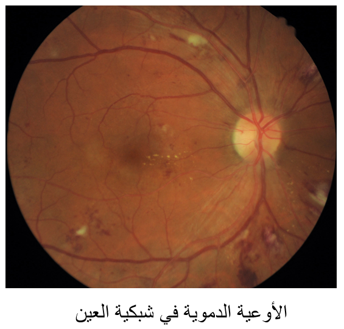

طب العيون في تركيا
يمكنكم الإطلاع على احدث التقنيات العلاجية في طب العيون في تركيا , تمتلك تركيا العديد من المستشفيات الطبية الحديث والتي تمتلك احدث الاجهزة الطبية والكوادر الطبية الخبيرة التي جعل من تركيا دولة مميزة في طب العيون

أمراض العيون بسبب مرض السكري: أسبابها وطرق علاجها
يصاب الكثير من مرضى السكري بأمراض العيون مثل اعتلال الشبكية ونزيف الشبكية ومضاعفات متعددة. نشرح لكم في هذا المقال أسباب أمراض العيون وطرق علاجها والوقاية منها.
جدول المحتويات
هل انخفاض السكر يؤثر على العين؟
الإنخفاض الحاد لمستويات السكر في الدم يترافق مع ظهور الأعراض التالية:
- الرؤية المزدوجة وضعف الرؤية وضبابيتها .
- انخفاض في حساسية التباين والوظيفة المركزية للشبكية.
- كما اظهرت التجارب المخبرية الأعراض التالية:
- إنخفاض في حساسية الشبكية
- انخفاض حيوية كل خلايا الشبكية
- موت خلايا الشبكية
- فقدان البصر
- إنخفاض إستجابة الشبكية.
وقد اظهرت أبحاث عن وجود زيادة في سوء إعتلال الشبكية العيني عند إنخفاض سكر الدم الحاد المرافق لعلاج مرض السكري بالأنسولين ، ونشر باحثين نظرية تآزر الأنسولين المستخدم في العلاج مع عامل النمو للبطانية الوعائية على الأوعية الدموية للعين ، مسببا تكاثر للأوعية الدموية وسوء حالة إعتلال الشبكية المرتبط بمرض السكري.

مضاعفات مرض السكر على العين
يؤثر داء السكري على العين عندما يرتفع مستوى جلكوز الدم والذي يدعى ايضا سكر الدم بالشكل الآتي:
- على المدى القصير: ليس من المتوقع فقدان البصر من ارتفاع مستوى سكر الدم ، لكن بعض المرضى يعانون من ضبابية الرؤية أو زغللة العين لمدة أيام أو أسابيع عندما يقومون بتغيير الخطة العلاجية أو الأدوية لداء السكري ، ويمكن أن يؤدي ارتفاع الجلوكوز إلى تغيير مستوى السوائل أو يسبب تورمًا في أنسجة العينين والتي تساعد على التركيز مما يسبب عدم وضوح الرؤية ، هذا النوع من الرؤية الضبابية مؤقت ويزول عندما تقترب مستويات الجلوكوز في الدم للمستوى الطبيعي.
- على المدى الطويل: يمكن أن يضر الأوعية الدموية الصغيرة في الجزء الخلفي من العين، هذا الضرر يحدث ماقبل داء السكري حينما تكون مستويات الجلوكوز الدم أكثر من المستوى العادي ولكن لم تصل إلى المستوى الكافي ليتم تشخيصها بداء السكري ، لاحقاً قد يتسرب من الأوعية الدموية التالفة السوائل وتسبب تورم ، ستبدأ الأوعية الدموية الضعيفة في النمو ، هذه الأوعية الدموية يمكن أن تؤدي إلى نزف في وسط العين مسببا ندبا أو إرتفاع ضغط في داخل العين ، تنتهي بالتسبب في ظهور أمراض عينية والتي يمكن أن تضر الرؤية وهي:
- اعتلال الشبكية السكري
- الاستسقاء البقعي أو الوذمة البقعية الصفراء السكرية
- المياه الزرقاء
- المياه البيضاء
وفي علاجك الطبية نقدم الخدمات الطبية بمختلف المجالات ومن بينها طب العيون مع أمهر الأطباء تحت رقابة وترخيص من وزارة الصحة في الجمهورية التركية.
زغللة العين لمرضى السكر
زغللة العين هو علامة شائعة على مرض السكري الخارج عن السيطرة ، فعندما تكون مستويات السكر في الدم مرتفعة لفترة طويلة يتم سحب مياه الجسم إلى العدسة مما يؤدي إلى تورمها ، وسوف يستغرق الأمر حوالي ستة أسابيع بعد عودة مستويات السكر في الدم إلى وضعها الطبيعي حتى يختفي التورم تماما.
نزيف شبكية العين لمرضى السكري
- نزيف الشبكية هو اضطراب في العين يحدث فيه نزيف في شبكية العين ، وهو النسيج الحساس للضوء والموجود على الجدار الخلفي للعين ، وتحوي الشبكية على خلايا مستقبلة للضوء في الشبكية تدعى الخلايا العصوية والمخروطية ، وهي مسؤولة عن تحويل الطاقة الضوئية إلى إشارات عصبية والتي يمكن معالجتها عبر الدماغ لتشكيل صور بصرية ، لذا حين يحدث النزيف في الشبكية تضعف الرؤية تدريجياً.
- عندما تكون الأوعية الدموية في شبكية العين متضررة، يمكن أن تصبح مسدودة كما في إعتلال الشبكية المرافق لمرض السكري، مما يقطع التروية الدموية في شبكية العين ، يمكن أن يؤدي هذا الفقدان في تدفق الدم إلى نمو الأوعية الدموية الأخرى الأضعف ، هذه الأوعية الدموية الجديدة يمكن أن تتسرب وتخلق ندبا التي يمكن أن تسبب فقدان البصر.
- يوجد أنواع عديدة لنزيف الشبكية حسب شكله ومكانه ، والنوع الأكثر ترافق مع إعتلال الشبكية السكري هو النقطي( البقعي).
فقدان البصر بسبب مرض السكري
- بعد سنوات عديدة من ارتفاع مستويات السكر في الدم، تصبح جدران الأوعية الدموية في شبكية العين ضعيفة ورقيقة ، يمكن للمناطق الضعيفة أن تنتفخ وتشكيل جيوب تدعى تمدد الأوعية الدموية الدقيق.
- هذه المناطق الرقيقة يمكن أن تسرب بروتين دهني ، اذا تسرب هذا البروتين إلى مركز الشبكية إلى منطقة تدعى البقعة سوف تسبب انتفاخ مما يسبب صعوبة في الرؤية ، عندما تترك هذه الحالة بدون علاج سوف تسبب تغييرات في الرؤية وقد تكون تلك التغييرات دائمة.
المياه الزرقاء الدموية
- هي حالة عينية شائعة فيها يتضرر العصب العيني والذي يربط العين مع الدماغ. وتحدث المياه الزرقاء عادة بسبب الضغط العالي غير الطبيعي داخل العين. مع مرور الوقت إذا لم تعالج يمكن أن يؤدي الضغط المتزايد إلى تآكل أنسجة العصب البصري، مما قد يؤدي إلى فقدان البصر أو حتى العمى. يمكن أن تحدث بمختلف الأعمار وشائعة أكثر في عمر السبعينات والثمانينات.
- يمكن أن يؤدي إرتفاع سكر الدم إلى الزرق ، وحسب الإحصاءات:
- إحتمالية حدوث الزرق لمرضى السكري هو الضعف.
- في بعض أمراض السكري تظهر أوعية دموية جديدة بسبب في القزحية ، والتي تسد تدفق سائل العين مما يزيد الضغط فيها ، وبنهاية يتسبب بما يسمى زرق الأوعية الدموية.
- يتم علاج الجلوكوما مع قطرات العين وصفة طبية لخفض ضغط العين ، في بعض الحالات، قد تحتاج إلى علاج أو جراحة بالليزر.
اعتام عدسة العين
- هو وجود عتامة في عدسة العين البلورية الموجودة خلف حدقية العين ، ويسبب عدم وضوح متزايد للرؤية بشكل غير مؤلم ، إن الأحداث التي تؤدي إلى فقدان الشفافية في كل من أنسجة العدسة القشرية والنووية هي أكسدة لبيدات الغشاء أو البروتينات الهيكلية أو الأنزيمية أو الحمض النووي DNA بواسطة بروكسيداز أو الجذور الحرة الناجمة عن ضوء الأشعة فوق البنفسجية خاصة النوع B.
- يمكن أن يؤدي ارتفاع نسبة السكر في الدم إلى إعتام عدسة العين والزرق ، فليس من النادر لمرضى داء السكري أن يصابو بالمياه البيضاء ، ولعلاجها في المرحلة المبكرة يمكن إستخدام النظارات والعدسات ، وقد يتطلب جراحة لإستبدال القرنية في حال اشتدت الحالة.
خلل الإبصار
يمكن أن يحدث في إعتلال الشبكية السكري الوذمة البقعية والتي يتسرب فيها محتوى الأوعية الدموية لخارجها بإتجاه المنطقة البقعية ، يلي ذلك زغللة العين و رؤية ضبابية مشوهة ، وتظهر هذه الأعراض في عين أكثر من العين الأخرى. ويلاحظ:
- 10% من مرضى السكري يعانون من فقدان البصر المرتبط بالوذمة البقعية.
- يمكن للتصوير المقطعي البصري أن يظهر مكان ثخن الشبكية العائد لتراكم السوائل في الوذمة البقعية.
التهابات العين
تشير مجموعة من البيانات إلى أن اعتلال الشبكية السكري هو مرض التهابي منخفض الدرجة ، قد يسبب الالتهاب على وجه التحديد التصاق الكريات البيضاء إلى الأوعية الدموية في الشبكية ، وهو المسار العام المحرض والنهائي المؤدي إلى الأمراض المعقدة كاعتلال الشبكية السكري ، ومع ذلك يبقى الإحتياج للمزيد من الدراسات لإثبات هذه الفرضية بشكل مباشر.
الشلل الأحادى العصبى
- يصف حالة تلف عصب واحد فقط أو مجموعة عصبية واحدة ، وتؤثر هذه الحالة سلبًا على جزء الجسم المرتبط بهذا العصب ، مما يسبب فقدان الإحساس أو الحركة أو الوظيفة في ذلك الجزء من الجسم.
- داء السكري قد ارتبط مسبقا باالشلل المزدوج الوجهي ، وحسب أحد الدراسات 28.4% من 67 مريض قد اجرى له الدراسة لديه الشلل المزدوج الوجهي ، ويعتقد ان ذلك يعود أن تآكل العصب هو أكثر عرضة في داء السكري.
اعتلال الشبكية السكري
ينتج اعتلال الشبكية السكري عن الضرر الذي يتسبب به داء السكري للأوعية الدموية الموجودة في شبكية العين ، وهذا الضرر للأوعية الدموية قد يسبب فقدان البصر بالشكل التالي:
- يمكن أن تتسرب السوائل إلى البقعة ، وهي منطقة الشبكية المسؤولة عن الرؤية المركزية الواضحة ، بالإضافة إنه على الرغم من صغرها فالبقعة هي جزء من شبكية العين التي تسمح لنا برؤية الألوان والتفاصيل الدقيقة ، ويسبب السائل انتفاخ البقعة ومن ثم إلى زغللة العين.
- يمكن ايضا للضرر الناتج من داء السكري أن يسبب إعاقة أو سد للأوعية الدموية فينتج عنه احيانا ظهور غير معتاد لأوعية دموية جديدة مسببة إعاقة للرؤية وفقدان البصر في النهاية.
مراحل تأثير السكري على شبكية العين
- إعتلال الشبكية السكري غير التكاثري: هذه المرحلة المبكرة من داء العين السكرية ، وتوجد لدى العديد من مرضى داء السكري:
- في هذه المرحلة تنزف الأوعية الدموية الدقيقة وتتسرب مسببة انتفاخ الشبكية ، وعندما تتورم المنطقة البقعية من الشبكية تدعى الوذمة البقعية ، وهذا هو السبب الأكثر شيوعا لفقدان البصر لدى مرضى داء السكري ،
- بالإضافة بهذا الطور قد يغلق مسار الأوعية الدموية في الشبكية ، وهذا مايدعى نقص التروية البقعية ، فيه يعجز الدم عن الوصول للمنقطة البقعية ، وفي بعض الأحيان جزيئات دقيقة يمكن أن تتشكل في الشبكية مؤثرة على الرؤية ايضا ، بشكل عام من في هذا الطور فيعاني المريض من زغللة العين.
- اعتلال الشبكية السكري التكاثري
هي المرحلة الأكثر تقدما من مرض العين السكري ، يحدث ذلك عندما تبدأ أوعية دموية جديدة في النمو في الشبكي ، يدعى هذا بتكون الأوعية الدموية الجديد ، هذه الأوعية الجديدة الهشة غالبا ما تنزف في الجسم الزجاجي للعين ، إذا كان النزف قليلاً فقط، قد يشاهد بعض العوامات الداكنة ، إذا كان النزف كثيراً فقد يعرقل ذلك كل الرؤية ، الأوعية الدموية الجديدة قد تكون تندب النسج المحيطة ، هذا النسيج التندبي قد يسبب مشاكل للمنطقة البقعية في الشبكية أو يؤدي إلى إنفصال الشبكية ، وهذا الطور خطر وقد يسبب فقدان كلا من البصر المركزي والمحيطي.
علامات اعتلال الشبكية السكري
يمكن للمريض ان يصاب باعتلال الشبكية السكري بدون أن يشعر ، هذا يعود بالتحديد كون الأعراض مازالت للمرحلة المبكرة من المرض ، مع إزدياد الحالة للسوء سوف تُلاحظ الأعراض التالية:
- زيادة في عدد العوامات الظاهرة في الرؤية.
- زغللة العين.
- تغير في بعض الأحيان في الرؤية من الضبابية إلى الوضوح.
- مشاهدة بقع داكنة أو سوداء في الرؤية
- سوء رؤية ليلي
- ظهور الألوان بشكل باهت أو شاحبة
- فقدان البصر
- تؤثر الأعراض عادة في كلا العينين.
فحص شبكية العين لمرضى السكري
- فحص العين بتوسيع الحدقة: لهذا الفحص يقوم طبيب العيون بوضع قطرات في عين المريض ، هذه القطر ستقوم بتوسيع حدقة العين مما سيسمح للطبيب برؤية مافي داخل العين ، سيتم ايضا إلتقاط صورة فوتوغرافية لداخل العين لملاحظة التالي:
- تشوهات أو شذوذ في الأوعية الدموية، والعصب البصري، أو شبكية العين
- المياه البيضاء
- إختلاف في ضغط العين
- تكون جديد للأوعية الدموية
- إنفصال الشبكية
- وجود النسيج الندبي
هذه القطرات مع وجود الضوء الساطع لجهاز التصوير ستشعر المريض بعدم الراحة ، وقد تزيد ايضا من الضغط الموجود في العين ، لذا يمكن اللجوء لأساليب التشخيص الأخرى.
- تصوير الأوعية الدموية بالفلوريسين: لإجرائه سيقوم طبيب العيون بوضع قطرات في الحدقة وسيقوم بحقن صبغة تدعى الفلوروسين في وريد ذراع المريض ، سيقوم بعد ذلك بأخذ صور عندما تنتشر الصبغة في العين ، الصبغة قد تتسرب إلى الشبكية أو تصبغ الأوعية الدموية في حال كانت الأوعية الدموية غير طبيعية ، هذا الفحص سيساعد الطبيب في تحديد أي الأوعية الدموية التي تسرب سائل أو قد سد مسارها أو التالفة منها ، ذلك سيعين الطبيب على تحديد أي من علاجات الليزر التي تناسب الحالة بشكل أفضل ، وقد تشير لضرورة حقن علاج داخل العين ، وقد يلاحظ خروج بول برتقالي غامق أو ظهور الجلد بلون مصفر باليوم التالي للفحص.
- التصوير البصري المقطعي التوافقي (OCT)
هو طريقة أخرى للنظر عن كثب في شبكية العين ، ستقوم آلة بفحص شبكية العين و تقدم صورا مفصلة عن سمكها ، يساعد ذلك الطبيب في العثور على تورم المنطقة البقعية وقياسه ، وتقدم علاجك الطبية الاستشارات المجانية ضمنها إرسال الصور والتقارير الطبية.
طرق علاج تأثير السكر على العين
زيادة فرص نجاح العلاج يعتمد على الكشف المبكر للحالة بالإضافة إتباع طرق الوقاية كي لا تزداد الحالة سوءا. وتختلف طرق العلاج حسب الأتي:
- علاجات تعتمد على تخفيض نسبة سكر الدم وجعله طبيعي
- العلاجات التي تعالج الأعراض والمضاعفات.
- العلاجات التي تعالج الأمراض الناتجة عن تأثير السكر على العين.
علاج شبكية العين لمرضى السكري
يقوم الطبيب بتحديد الطريقة الأنسب للعلاج حسب حالة كل مريض بشكل منفصل ، ومن طرق العلاج :
علاج زغللة العين لمرضى السكر
عندما تكون الرؤية غير الواضحة نتيجة لانخفاض نسبة السكر في الدم ، تشمل العلاجات استهلاك الأطعمة الغنية بالسكرات سريعة المفعول ، مثل العصائر والحلويات ، ويمكن ايضا اخذ حبوب الجلوكوز التي تزيد نسبة السكر في الدم.
العلاجات الأخرى لزغللة العين تعتمد على الحالة المرضية التي تسبب الزغللة ، هذا يتضمن علاجات مثل القطرات العين والجراحات بالليزر أو العلاجات التي تعالج المرض المسبب نفسه.
علاج نزيف شبكية العين لمرضى السكري
- العلاج بالتخثير الضوئي:
يستخدم التخثير الضوئي بالليزر الحرارة منفث الليزر لسد أو إنهاء نزيف الأوعية دموية غير طبيعية في شبكية العين ، ويمكن استخدام أحد النهجين عند علاج اعتلال الشبكية السكري:
- العلاج بالتخثير الضوئي الليزري : التخثر الضوئي البؤري ، يستخدم لسد الأوعية الدموية المتسربة المحددة في منطقة صغيرة من شبكية العين ، عادة بالقرب من المنطقة البقعية.
- العلاج بالتخثير الضوئي عبر الشبكية المبعثر: هي أحد أنواع الليزر المستخدم في علاج أمراض العين ، وتستعمل على المرضى الذين ينمو لديهم أوعية دموية جديدة في المنطقة الخلفية للعين في الشبكية أو في نظام الإطراح في مقلة العين
- الحقن بمثبطات عامل النمو البطاني الوعائي Anti-VEGF: قد يختار الطبيب مثبطات عامل النمو البطاني الوعائي ، ويتميز بقدرته ليس فقط على إيقاف تقدم المرض وايضا على تحسين الرؤية بمقدار الثلث لمعظم المرضى (90%) أو على الأقل ثباتية الرؤية ، والأكثر شيوعا هو الحقن بإستخدام رانيبيزوماب.
- استئصال زجاجية العين: استئصال زجاجية العين هو إجراء جراحي يقوم به أخصائي حيث تتم إزالة هلام الخلط الزجاجي الذي يملأ تجويف العين لتوفير وصول أفضل إلى شبكية العين ، وهذا يسمح لمجموعة متنوعة من الإصلاحات، بما في ذلك:
- إزالة الدم أو المواد الأخرى التي تنمع الضوء من التركز المناسب على الشبكية.
- إزالة الندب.
- الإصلاح الليزري لإنفصال شبكية العين.
- علاج الثقوب البقعية
. بمجرد اكتمال الجراحة قد يتم حقن محلول ملحي أو فقاعة الغاز أو زيت السيليكون في الجل الزجاجي للمساعدة في الاحتفاظ الشبكية في وضعها.
زراعة شبكية العين لمرضى السكري
تعد زراعة الشبكية طريقة مبتكرة لإستعادة البصر في التآكل الحاصل في أمراض الشبكية ، وللشبكية الصناعية ثلاثة أنواع رئيسية:
- تحت الشبكي
- فوق المشيمية
- فوق قوس العصبية
علاج شبكية العين بالليزر لمرضى السكري
العلاج بالليزر يستخدم لعلاج النمو الجديد للأوعية الدموية في خلفية العين في المراحل المتقدمة من اعتلال الشبكية السكرية ، وذلك بسبب انه الأوعية الدموية الجديدة تميل للنزيف في العين.
هذا العلاج يساعد على ثباتية التغييرات الحاصلة للعين بسبب مرض داء السكري ، ويمنع رؤية المريض من الإزدياد سوءاً ، لكنها في الغالب لن تحسن من رؤية المريض ، وتستغرق مابين 20 إلى 40 دقيقة ، قد يستلزم أكثر من جلسة.
علاج شبكية العين لمرضى السكري بالأعشاب
هناك أنواع معينة من الأعشاب والنباتات الطبيعية التي تقوم بتقوية الأوعية الدموية ويمنع نزفها داخل العين:
- التوت وهو من الأغذية الغنية بفيتامين A و فيتامين C والذي يقوي ويحمي العين.
- جنكو بيلادوبا: الذي يزيد من قطر الأوعية الدموية والذي يسمح للدم بالتدفق ليروي الشبكية.
- الكيريستين: وهو فلافونوئيد الذي يفيد بمنع الخثرات الدموية عبر تقليص تشكل الهيستامين ، كما إنه ييبطئ تشكل عوامل نمو الأنسولين ، فضلا عن خفض إرتفاع الضغط عبر تخفيض الضغط على جدران الأوعية الدموية
- خلاصة بذور العنب فعالة في منع تسرب الدم من الأوعية المتضررة .
- من الأعشاب الأخرى البقدونس والذي يحتوي على نسب عالية من مضادات الأكسدة وفيتامين سي واللوتوئين ، هذا يساعد على حماية المنطقة البقعية من ضرر الأكسدة.
علاج فقدان البصر بسبب السكري
تركز العلاجات على إبطاء أو إيقاف تطور المرض للحفاظ على الرؤية المتبقية، في الوقت الحالي الأدوية الفموية الفعالة أو قطرات العين غير كافية لعلاج اعتلال الشبكية السكري مباشرة ، والجراحة (على سبيل المثال، الليزر) هو العلاج المفضل لإيقاف تطور الحالة ، بينما تحسين الرؤية يمكن أن يحدث في حالات إستخدام الحقن بمثبطات عامل النمو البطاني الوعائي Anti-VEGF.
علاج إعتلال الشبكية السكري
لزيادة فرص نجاح العلاج يفضل الكشف المبكر عن الإعتلال عبر الفحص الدوري لمستوى سكر الدم وتسجيل القياسات ليتم تدقيقها من قبل الطبيب ، تختلف طرق العلاج حسب حالة المريض ومن أنواعها:
- الحقن بمثبطات عامل نمو الأوعية البطانية anti-VEGF التي تبطئ أو تعكس إعتلال الشبكية السكري ، أدوية أخرى مثل الكورتيزونات قد تفيد ايضا.
- العلاج بالليزر: لتقليل التورم في الشبكية ، يمكن أن يستخدم الطبيب هذه الطريقة لتقليص الأوعية الدموية في العين ومنعها من النزيف.
- الجراحة العينية: في حال كانت الشبكية تنزف بغزارة أو يوجد ندوب كثيرة في العين قد ينصح الطبيب بالجراحة مثل إزالة الجسم البلوري.
كيفية القضاء على مرض السكر نهائياَ
- الهدف الرئيسي في علاج داء السكري النمط 1 والنمط 2 هو السيطرة على مستويات السكر في الدم (الجلوكوز) ضمن المعدل الطبيعي ، وتتلخص هذه العلاجات في إعطاء الأنسولين و الأدوية البديلة الفموية والحقنية والتمارين الرياضية والحميات الخاصة بالسكري ، تملك بعض المنتعجات الطبية والإستشفائية في تركيا أقسام خاصة لهذه الحميات والتمارين الرياضية ويمكن الوصول إليها عبر علاجك الطبية.
- وقد أصبح بالإمكان الاستغناء عن هذه العلاجات ومعالجة داء السكري من النوع الثاني جراحيا بإستخدام الجراحة الاستقلابية ، ويتم اجراؤها في 8 مراكز فقط عالميا ، واحد منها في تركيا لدى علاجك الطبية.
الوقاية من أثر السكر على العين
- أخذ فحص العين بشكل دوري على الأقل مرة في السنة
- التحكم بمستويات السكر غدائيا
- أخذ أدوية داء السكري التي وصفها الطبيب
- إيقاف التدخين
- القيام بالتمارين الرياضية
- أخذ المشورة الطبية بشكل سريع في حال ملاحظة أي تغييرات في الرؤية
الكشف المبكر عن أمراض العين بسبب السكري
اعتلال الشبكية السكري لا يمكن علاجه بشكل كامل ، عملية الليزر (التخثير الضوئي) عادة ما تكون فعالة جدا لمنع فقدان البصر إذا اجريت قبل أن تضرر شبكية العين بشكل كبير ، لذا التشخيص المبكر عبر الفحوصات العينية مهم جدا في إعتلال الشبكية السكري، بالإضافة يمكن تحسين الرؤية عن طريق الإزالة الجراحية لهلام الزجاجية (استئصال الزجاجية) ، وفي كشف اعتلال الشبكية السكري التكاثري يمكن أن تساعد الأدوية المضاد للالتهابات أو حقن دواء عامل النمو البطاني المضاد للأوعية الدموية بهدف التحفيز على انكماش للأوعية الدموية الجديدة في العين.
تحرير: علاجك الطبية ©


المصادر:
ncbi , kaiserpermanente , webmd ,علاجك الطبية ,aao , niddk
اطلع على أحدث المنشورات والأخبار الطبية
عمليات شفط الدهون بالفيزر في تركيا والأسعار 2021
يعتبر شفط الدهون بالفيزر من أفضل عمليات علاج السمنة المفرطة. تعرف معنا على مميزات وعيوب شفط الدهون بالفيزر وكيف تتم العملية وشاهد الفرق قبل وبعد في تركيا.
طرق علاج طول النظر في تركيا وأحدث التقنيات
يعاني الكثير من كبار السن وحتى البالغين من مرض طول النظر . سنتحدث في هذا المقال عن كيفية علاج طول النظر وأسباب هذا المرض ونسبة نجاح العلاج .
الفرق بين زراعة الشعر في ايران وتركيا 2021
بالرغم من أن أسعار زراعة الشعر بين تركيا وايران لا تختلف كثيرا إلا أن هنالك الكثير من الفروق التي قد تحدد لك الدولة الأفضل لزراعة الشعر فيها.
طرق علاج قصر النظر في تركيا وأحدث التقنيات
يعاني الكثير من الأطفال وحتى البالغين من مرض قصر النظر. سنتعرف في هذا المقال على أفضل طرق علاج قصر النظر وأسباب هذا المرض ونسبة نجاح العلاج .